오픈쇼케이스
오픈쇼케이스 배치, 벽면·통로·계산대 중 어디가 맞을까
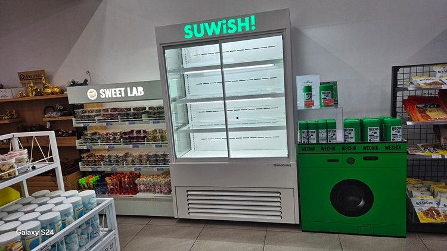
오픈쇼케이스는 문이 없어 앞쪽 에어커튼으로 냉기를 붙잡는 장비라, 자리를 정할 때 손님 동선과 함께 에어컨 바람·출입문 외풍·직사광선이 닿지 않는지를 먼저 보셔야 합니다. 그다음 벽면, 통로 측면, 계산대 근처 중 매장에서 팔고 싶은 상품의 성격에 맞는 자리를 고르면 됩니다.
안녕하세요. 편의점, 샐러드 매장, 베이커리에 들어가는 오픈쇼케이스를 매장 구조에 맞춰 만드는 한성쇼케이스입니다.
오픈쇼케이스를 들이기로 하면 크기와 디자인은 꼼꼼히 고르시면서, 막상 어디에 둘지는 "빈 벽에 놓으면 되겠지" 하고 정하시는 경우가 많습니다.
그런데 오픈쇼케이스는 같은 제품이라도 놓는 자리에 따라 손님 손이 가는 횟수도, 냉기가 빠져나가는 양도 달라집니다.
문이 없는 구조라 주변 공기의 영향을 그대로 받기 때문이죠.
오늘은 오픈쇼케이스를 어디에, 어떤 방향으로 두면 좋은지 자리별 특징과 업종별 기준으로 나눠 정리해 보겠습니다.
1. 먼저 피해야 할 자리
오픈쇼케이스 앞면에는 위에서 아래로 흐르는 찬 공기의 막, 에어커튼이 있습니다. 이 막이 흐트러지면 안쪽 냉기가 통로로 쏟아져 나가고, 콤프레셔는 그만큼 더 오래 돌아갑니다.
에어컨 바람이 정면으로 닿는 자리, 출입문이 열릴 때마다 외풍이 들어오는 자리, 오후 햇빛이 유리창을 지나 선반에 떨어지는 자리는 에어커튼을 흔드는 대표적인 위치입니다.
앞쪽 선반 상품이 미지근하다면 자리부터 의심해 보세요.
- 천장 에어컨 토출구 방향을 확인하세요.
- 출입문에서 바람이 들어오는 방향을 체크하세요.
- 오후 시간대 햇빛이 드는 범위를 확인하세요.
2. 자리별 장단점
벽면 배치는 통로를 침범하지 않고 상품을 한쪽에 정리하기 좋습니다. 대신 출입구에서 바로 보이지 않으면 손님이 지나칠 수 있어 상단 간판이나 조명으로 눈길을 끌어 주는 게 좋습니다.
통로 측면 배치는 손님이 걷는 길과 맞닿는 면이 넓어 충동 구매를 끌어내기 유리합니다. 다만 오픈쇼케이스는 선반이 앞으로 나와 있어 통로가 좁아지니 깊이를 꼭 계산해야 합니다.
계산대 근처는 결제 직전에 소량 상품을 한 번 더 보여 주기 좋지만, 직원 이동 구역과 겹치면 바쁜 시간에 병목이 됩니다.
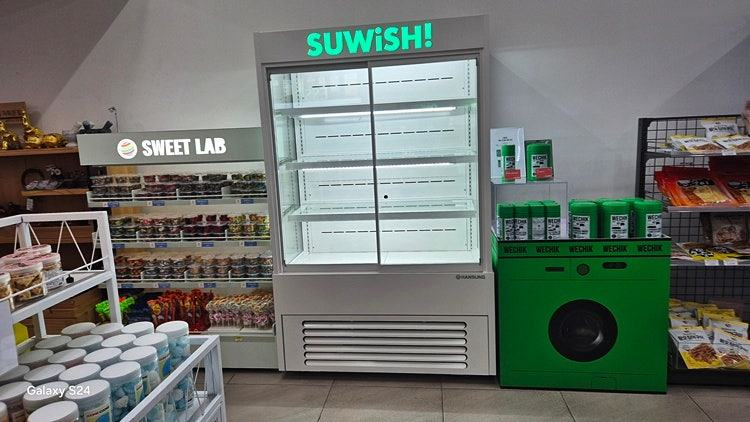
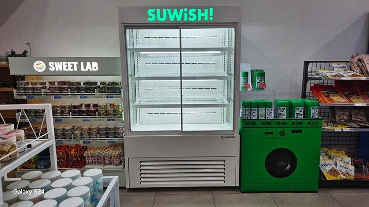
3. 업종별로 보는 배치 기준
카페와 디저트 매장은 줄 서는 손님과 직원이 동시에 움직이는 계산대 앞 구간을 먼저 검토하는 경우가 많습니다.
병음료나 샌드위치를 대기 줄 옆에 두면 기다리는 동안 자연스럽게 손이 갑니다.
편의점과 소형 마트는 출입구에서 가장 먼저 보이는 벽면이나 음료·간편식 구역과 이어지는 자리를 우선 봅니다.
샐러드·도시락처럼 그날 회전시켜야 하는 상품은 손님이 가장 많이 지나는 길목에 두는 편이 유리합니다.
4. 매립형과 야간 관리
카운터 뒷벽처럼 비어 있는 면에 매립형으로 넣으면 인테리어와 자연스럽게 이어지고 통로도 넓게 쓸 수 있습니다.
이때는 기계실 열이 빠질 통로를 설계 단계에서 함께 잡아야 합니다.
영업이 끝난 뒤에는 나이트커버를 내려 냉기 손실과 먼지를 함께 막아 주세요. 오픈 구조의 단점을 줄이는 가장 손쉬운 습관입니다.
- 매립형이라면 통풍구 위치를 먼저 정하세요.
- 나이트커버를 쓸 수 있는 구조인지 확인하세요.
체크리스트
- 에어컨 토출구와 출입문 외풍 방향
- 직사광선이 드는 시간과 범위
- 통로 폭과 쇼케이스 깊이
- 주력 상품에 맞는 자리(벽면·통로·계산대)
- 매립 시 통풍 경로
- 나이트커버 사용 여부
현장에서 자주 보는 경우: 같은 쇼케이스가 자리 때문에 애물단지가 될 때
냉장 쇼케이스는 직원과 손님이 오가는 길목에 놓이면서 손님이 늘 보게 되는 설비입니다. 그래서 같은 규격이라도 어디에 두느냐에 따라 잘 보이고 잘 팔리는 자리가 되기도 하고, 늘 걸리적거리는 장비가 되기도 합니다.
설치 뒤 재배치를 문의하시는 경우를 보면 출입구와 계산대 사이를 막았거나, 주방 작업 구역과 손님 통로가 겹쳤거나, 문을 여닫을 때 사람과 부딪히는 자리인 경우가 대부분입니다.
그래서 상담 때는 장비 사양보다 먼저 매장 도면에서 설치 후보 위치와 크기, 이동 경로를 함께 정리합니다.
어느 구역에 둘지, 누가 주로 꺼낼지, 어떤 상품을 넣을지를 먼저 정하면 후보가 자연스럽게 좁혀집니다.
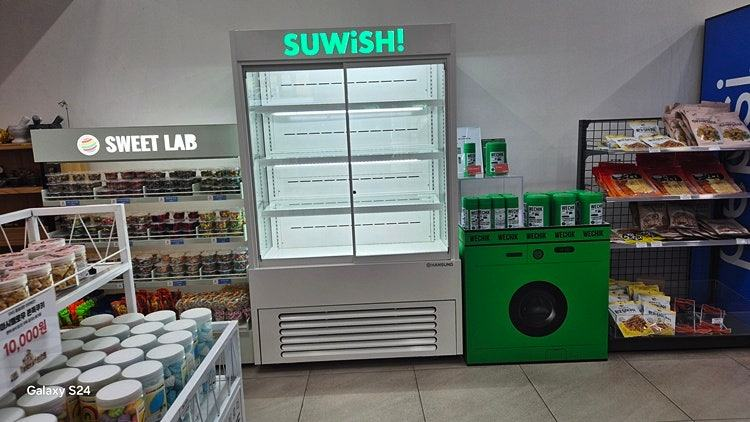
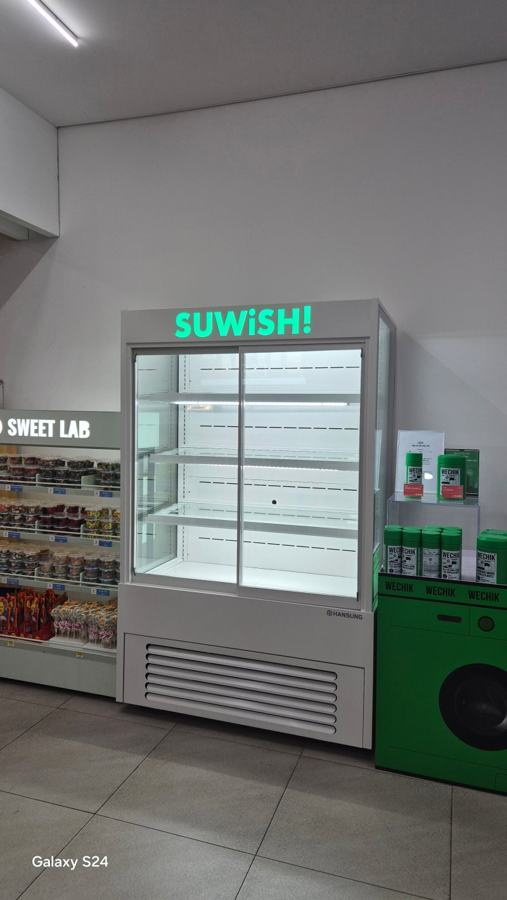
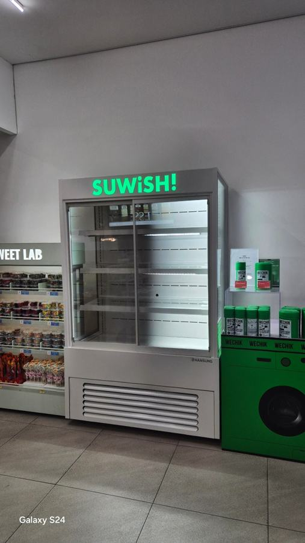
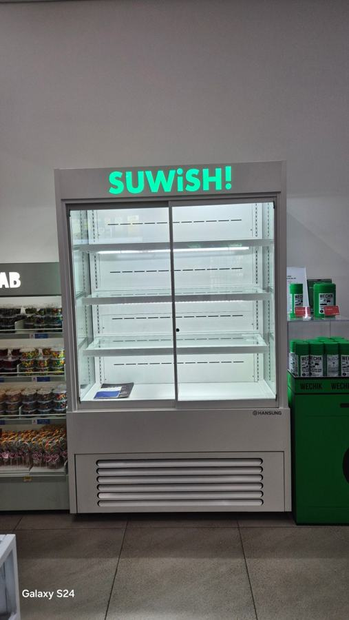
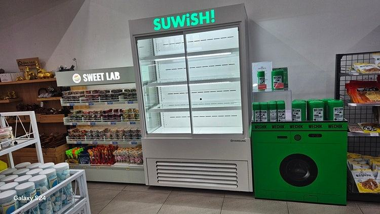
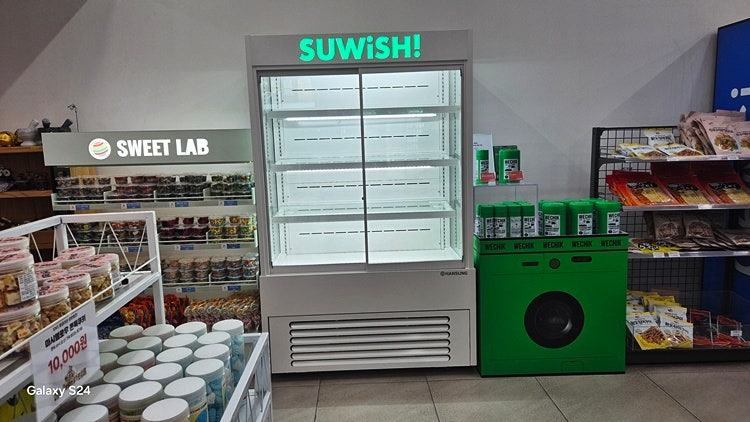
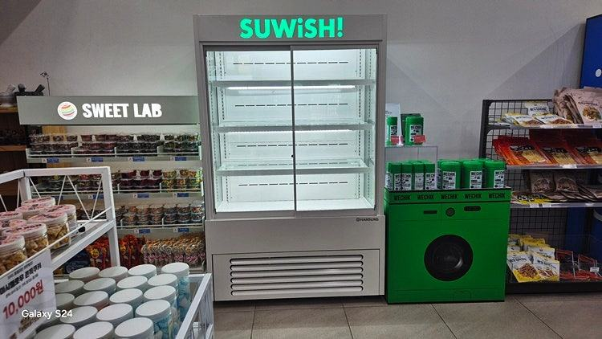
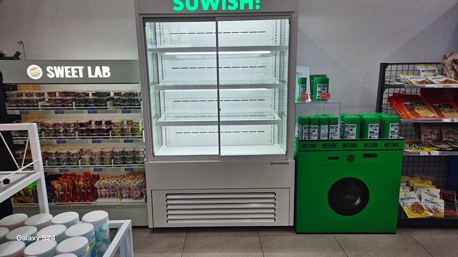
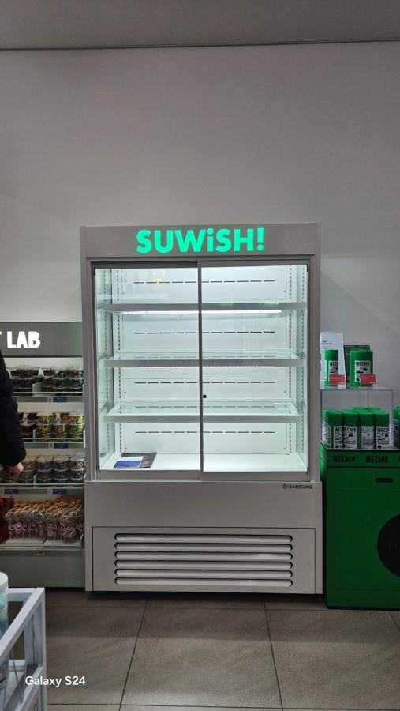

자주 묻는 질문
오픈쇼케이스를 출입문 바로 옆에 두면 안 되나요?
눈에 잘 띄는 장점은 있지만 문이 열릴 때마다 바깥 공기가 들어와 에어커튼이 흐트러집니다. 문과 조금 떨어진 벽면에 두고 조명이나 간판으로 시선을 끄는 방법을 먼저 고려해 보세요.
통로 쪽에 두면 매장이 좁아 보이지 않을까요?
쇼케이스 깊이와 통로 폭을 함께 계산해야 합니다. 손님이 상품을 고르며 멈춰 서도 다른 손님이 지나갈 수 있는 폭이 남는지 도면으로 확인해 보세요.
오픈쇼케이스 앞쪽 상품만 덜 시원한 이유가 뭔가요?
에어컨 바람이나 외풍, 햇빛이 에어커튼을 흔들고 있을 가능성이 큽니다. 상품을 진열선 안쪽으로 정리하고 주변 바람 방향을 먼저 확인해 보세요.
매장 조건에 맞춰 만드는 한성쇼케이스
원하시는 제품 사진과 설치할 공간 사진만 보내 주셔도 매장에 맞는 구성을 추천해 드립니다.
- 전국 240여 개 A/S 전담 센터 운영
- 본사 대량 자재 매입으로 품질 대비 합리적인 가격
- 유럽제·삼성 냉각 콤프레셔 적용
- 국내 최초 쇼케이스 전문 디자이너 상주
매장 폭과 원하는 진열 구성을 알려 주세요. 실측과 견적을 안내해 드립니다.
031-986-2458